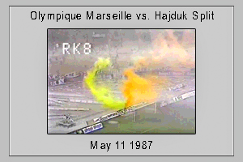
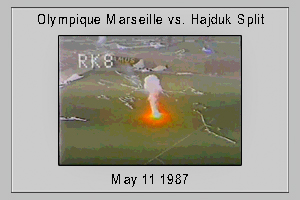

CANASTA


"We don't have wonton soup. We have wonton soup spelled backwards. Not now."
-Henry the Cook, Peter Wang from Chan Is Missing
A woman on a plane turned to her husband and said
"Your sister's a two-stage furnace. And she's not too good lookin' either."
To which her husband replied
"She looks like every woman."
The Iditarod too in Little Peru
(Iditarod? I hardly know her)
Auf Wiedersehen & Adieu to You